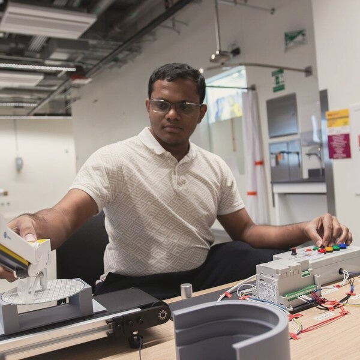
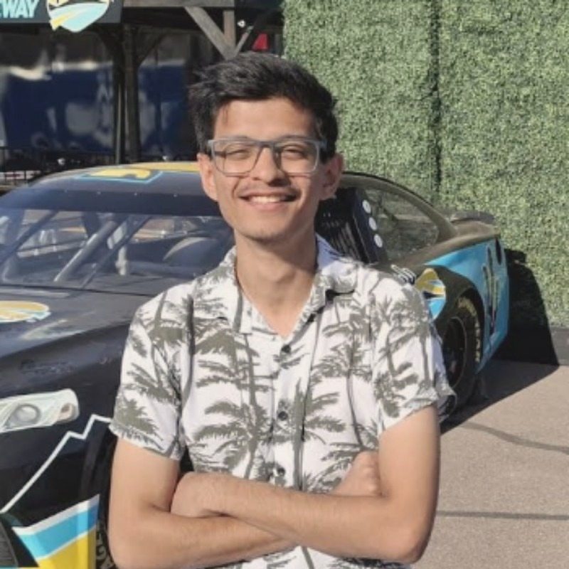
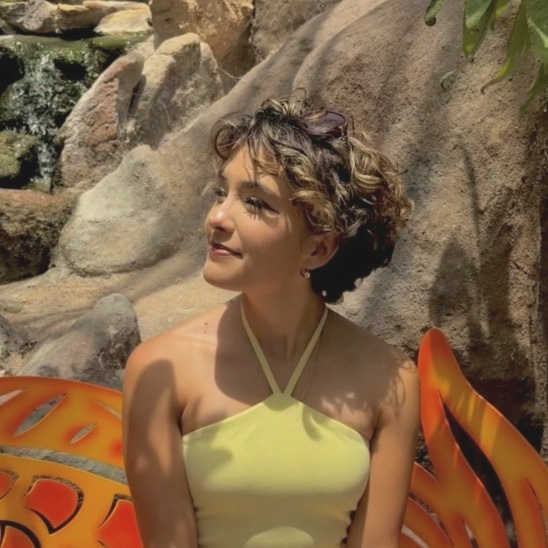
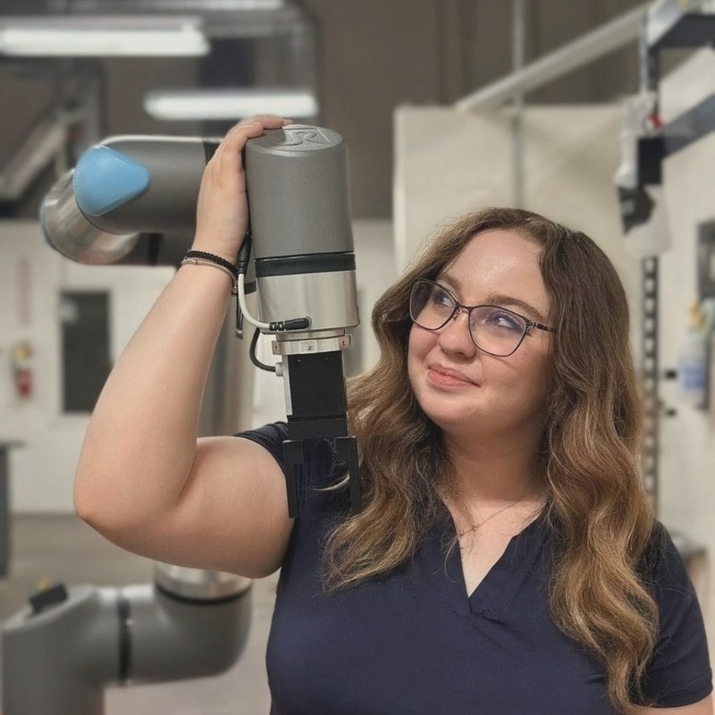

Instruction in the lab.

PhD researcher
Sai Srinivas Tatwik Meesala
PhD candidate in Robotics and Autonomous Systems and Graduate
Teaching Assistant in the Redkar Research Group, with his
master's and bachelor's degrees in robotics from ASU. He
develops and teaches the lab's hands-on robotics laboratories -
ROS 2, NVIDIA Isaac Sim, FANUC and Universal Robots arms, and
PLC and SCADA systems - and co-authors the lab's articulated
robot and Isaac Sim instructional lab series.
ASU profile →
Personal site →
PhD researcher
Rajesh S Aouti
PhD student in Robotics and Autonomous Systems at ASU,
based in Gilbert, Arizona. He co-authors every instructional
lab guide on this site - the NVIDIA Isaac Sim series and the
articulated robot series used in RAS 545 Robotic Systems I -
writing the material students follow from simulation through
hardware.
LinkedIn →
Lab assistant
Prajval Arora
Lab assistant in the Robotics Systems Instructional Lab and a
sophomore in ASU's Robotics and Autonomous Systems Engineering
BSE program. He supports the lab's industry PLC and automation
training and its instructional labs, co-authors the Isaac Sim
instructional lab series for RAS 545, built the demonstrator
table for the lab's Stellantis workcell, and leads this
website project.
Portfolio →

Lab assistant
Akshan Bhelkar
Lab assistant in the Robotics Systems Instructional Lab and
president of the ARMS club. A Barrett, The Honors College
student studying Robotics and Autonomous Systems at ASU, he
supports the lab's courses and training while working toward
a career as a defense systems engineer.
LinkedIn →
Lab assistant
Nick Nekrasov
Lab assistant in the Robotics Systems Instructional Lab, where
he works as an ASU research aide and lab tech. A sophomore
Robotics and Autonomous Systems student and the mechanical
design lead of the ARMS club, he supports the lab's courses
and training and is working toward swarm robotics for search
and rescue.
LinkedIn →
Lab assistant
Kaushik Gunasekaren
Lab assistant in the Robotics Systems Instructional Lab and a
Robotics and Autonomous Systems student at ASU. He also works
as a research assistant with the MIT Auto-ID Lab and serves
as vice president of the ARMS club, and he supports the lab's
courses and training while working toward a career in
research and development.
LinkedIn →

Lab assistant
Ela Chachulski
Lab assistant in the Robotics Systems Instructional Lab and a
Robotics and Autonomous Systems Engineering undergraduate at
ASU, supporting the lab's courses and training. She also
works in industrial automation at OPEX and as a mechatronics
lab assistant and PhD research assistant.
LinkedIn →

Lab assistant
Sara Doyle
Lab Assistant in the Robotics Systems Instructional Lab and a
Robotics and Autonomous Systems undergrad at ASU. She is a
former Aerospace Robotics Intern at CMI Group, where she gained
hands-on experience in aerospace manufacturing, robotic
automation, and UR collaborative robots. She also serves as
Development and Outreach Coordinator for the ARMS club and is
working toward a career in autonomous space systems.
LinkedIn →